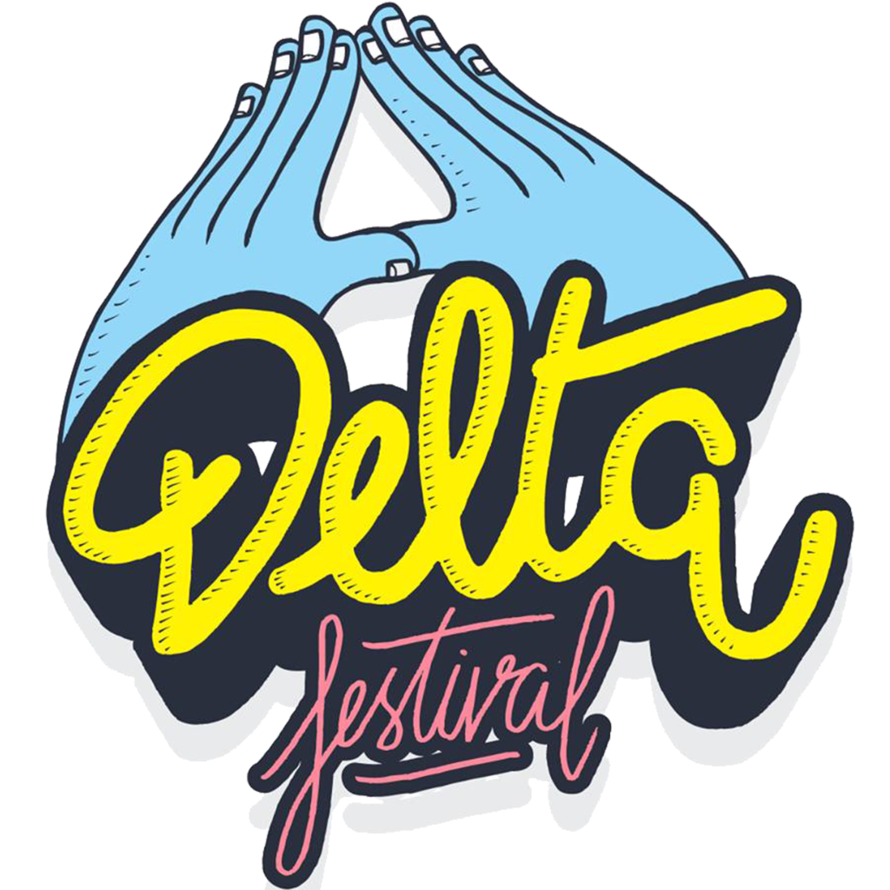
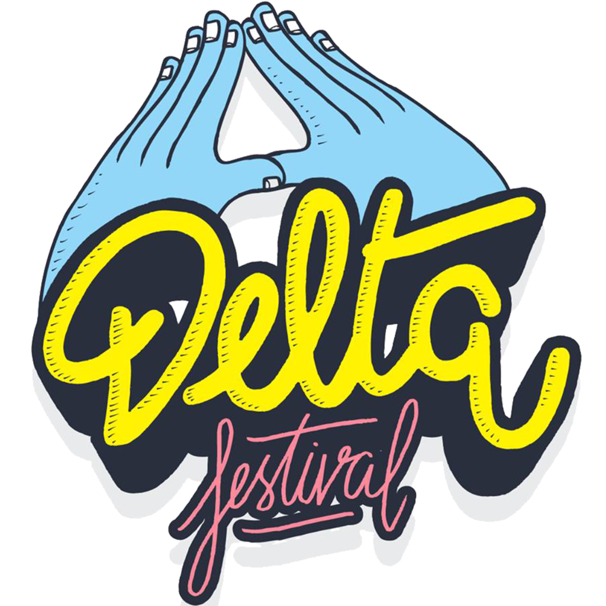

Le bool's de Com Externe
By SIYmba² 1482
Pourquoi je suis devant vous aujourd'hui ?
Le bool's en une phrase...
Faire pinner KIN aux yeux des pek’s tout en régalant sa prom’s avec pleins d’offres et de partenariats
A premiere vue...
Contacter le B.A.BA et les BDE pour ramener plein de pek’s aux guinches et aux P²
Oui mais
Collaborer avec les com guinche et K’fet dont c’est le rôle en partageant le carnet d’adresse du cercle
Les partenariats
Faire profiter aux gadz de la vie étudiante d’Aix et ses alentours grâce à la FAMI ou au B.A.BA
Conserver des partenaires existants
 

Rechercher de nouveaux partenaires :
- Dans le monde scientifique et industriel
- Pour s’ambiancer avec des bars
- Pour payer moins cher (tissus pour les biaudes par exemple)
Le rôle de médiateur lors d’événements avec des pek’s
En cas de problèmes pour les guinches et les P² :
Calmer le jeu en trouvant un entente
Pour aider la boquette Promo AM à attirer les K’strors :
JPO, présentations dans les prépas, rassurer les parents…
Une petite devinette :
Qui est-ce ?
Faire un lien avec les alternants
La gestion des réseaux sociaux et des outils numériques
Développer la page Instagram du Cercle :
Analyse de comptes cibles, possibilité de mettre en place des bots
Mettre plus en avant les activités les plus Zloeuil de nos boquettes et de la prom’s
Surveiller l’image de KIN et des Gadz’Arts sur Internet en remédiant aux avis négatifs
La relation avec les journalistes et les pek’s curieux
Combler l’ignorance pour ne pas les laisser dire n’importe quoi
Savoir expliquer les manips les plus ayat’s en langage pek’s en les rendant magnifiques à leurs yeux
Et savoir définir un Gadz’Arts, les Trad’s, les usin’s, la SDT en language pek's
Surveiller l’espionnage pendant les usin’s
Prévoir en amont les rencontres avec les journalistes en faisant des communiqués de presse mais surtout savoir improviser en cas d’interview surprise
Importance de l’orthographe et de l’éloquence
Utilisation de techniques de suggestions, d’argumentation et d’attention
La place du com externe dans la prom’s
Être disponible pour les boquettes si elles ont besoin de visibilité à l’extérieur ou pour participer à des concours (UAI, AMJE, Hydrogadz, 4L Trophy…)
Former sa prom’s à comment s’exprimer si certains en ont besoin
Etre à l’écoute de sa prom’s pour réaliser des partenariats souhaités
Le Com externe est le premier à zocquer en usin's s'il y a un incident
La place du com externe dans le Cercle
Comme tout bool’s du cercle il faut être rigoureux, organisé, ponctuel, à l’écoute et disponible
Et comme tout bool’s du cercle il faut surtout régaler sa prom’s en répondant aux maximum des attentes
“Le cercle est le pont entre KIN et le reste du monde”
Iz’Or 165tt KIN 218, Grip’s O
Le lien avec Zi O :
Analysent ensemble les partenariats ( responsabilité légale du Zi O) et sont les deux principaux représentants de KIN à l’extérieur
Le lien avec Vizi O :
Discutent des besoin des boquettes si elles ont un besoin externe
Le lien avec le Com Interne O :
Peuvent se répartir les tâches concernant les Archis et les autres tabagn’s ou se remplacer ponctuellement si besoin